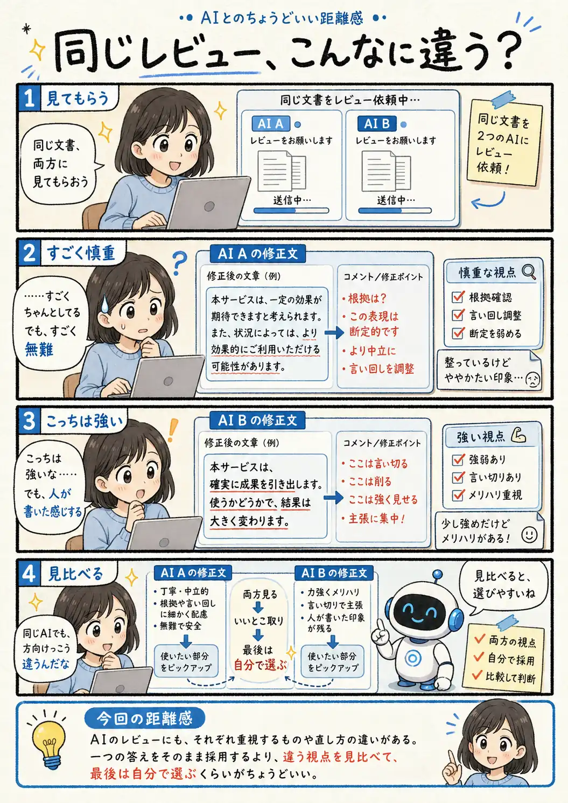

#124
同じレビュー、こんなに違う？
同じ原稿を見せたのに、直す方向はひとつじゃなかった。

メモ
AIに文章をレビューしてもらうと、指摘そのものだけでなく「何を気にするか」にも違いが出ます。根拠や表現の安全さを細かく見ることもあれば、読みやすさや文章の勢いを優先することもあります。
どちらか一方を正解にしなくても、違うレビューを並べると、自分が残したい表現や直したい部分が見えやすくなります。最後に文章を決める材料が増えた、と考えるのもよさそうです。
今回の距離感
AIのレビューにも、それぞれ重視するものや直し方の違いがある。一つの答えをそのまま採用するより、違う視点を見比べて、最後は自分で選ぶくらいがちょうどいい。